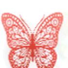
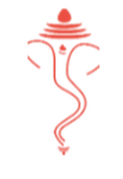
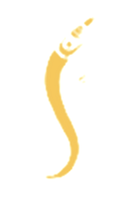

॥ श्री गणेशाय नमः ॥

प्रेषक : श्री सुधाकरराव चव्हाण परिवार.
आमंत्रण
दरवर्षी प्रमाणे यंदाही आमच्या येथे आनंदमयी वातावरणात गणपती बाप्पांचं आगमन झालेलं आहे. गणपती उत्सवा निमित्य आमच्या येथे दिनांक २४/०९/२६, गुरुवार रोजी सत्यनारायण पूजा व महाप्रसादाचे आयोजन करण्यात आले आहे. आपणास विनंती आहे की आपण सहपरिवार येऊन या महाप्रसादाचा आस्वाद घ्यावा.
कृपया हेच हृदयस्थ वैयक्तिक आमंत्रण समजून, जरूर येणे करावे.
दिनांक, वेळ व स्थळ
तपशील
दिनांक
२४ सप्टेंबर २०२६
गुरुवार
वेळ
सायंकाळी ६:३०
पासून आपल्या आगमना पर्यंत
स्थळ
आमचे राहते घरी, “सुधानंद”
८४, जूना सुभेदार लेआऊट विस्तारित, नागपूर – २४


॥ गणपती बाप्पा मोरया ॥